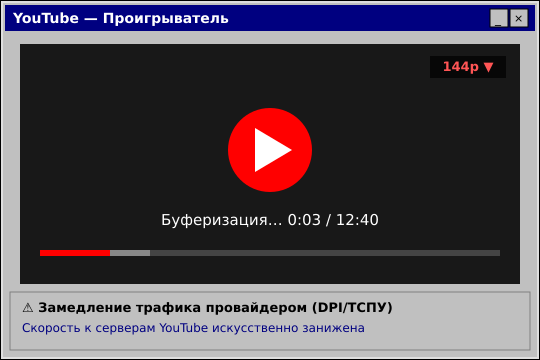
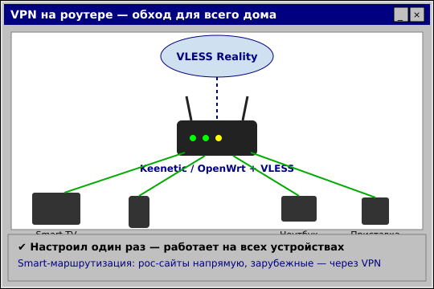

YouTube замедляют сильнее: как смотреть на телевизоре LG и Samsung★彡 YouTube · 22 июня 2026 彡★

Пользователи продолжают жаловаться на замедление YouTube — видео обрывается, не грузится в HD, бесконечная «буферизация». Особенно тяжело на Smart TV, где обычное VPN-приложение не поставить. Рассказываем, как вернуть нормальное качество.  Почему YouTube тормозитЭто не сбой YouTube и не ваш интернет. Оборудование ТСПУ у операторов искусственно занижает скорость к серверам Google, на которых лежит видео. Картинка переключается на 144p, ролик замирает на загрузке. Проверить, что дело именно в замедлении у вашего провайдера, можно бесплатным тестом — если YouTube недоступен или медленный, а российские сайты летают, это типичная картина фильтрации.  Как смотреть на телефоне и ПКНа телефоне и компьютере достаточно VPN-приложения с протоколом VLESS Reality или AmneziaWG — они обходят DPI и возвращают полную скорость. Подойдут Hiddify, NekoBox, v2rayNG.
Как смотреть на телевизоре LG, Samsung, Android TVНа LG (webOS) и Samsung (Tizen) установить VPN-приложение нельзя. Рабочее решение — VPN на роутере: настраиваете один раз, и YouTube открывается на телевизоре, телефоне и приставке сразу, без приложений на каждом устройстве. На Android TV проще: туда можно поставить NekoBox или v2rayNG из APK и подключиться так же, как на телефоне. Проверить, что заблокировано именно у вас, можно бесплатным тестом Чебурнет Коннект. 

Прокси вернёт Telegram бесплатно, а VPN на VLESS Reality — весь интернет и обходит DPI/ТСПУ. Промокод VNESPISKA = −20% ★ проверь блокировки — тест 
Другие новости
|